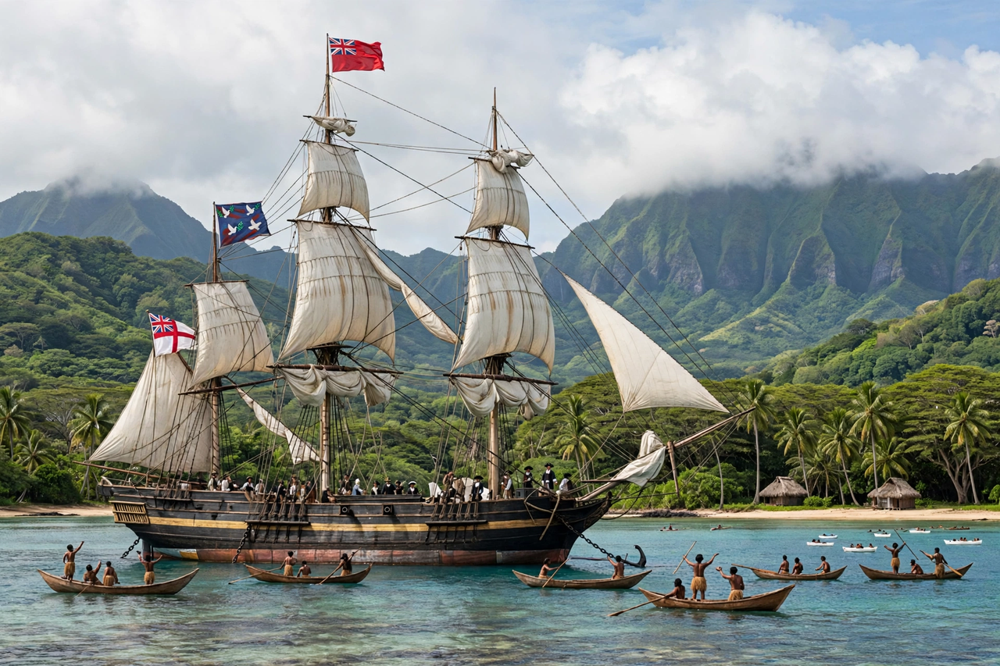

| Abbreviation | LMS |
|---|---|
| Formation | 1795 |
| Type | Protestant missionary society |
| Headquarters | London, England |
| Successor | Council for World Mission (1977) |
The London Missionary Society was an interdenominational evangelical missionary society formed in England in 1795 at the instigation of Welsh Congregationalist minister Edward Williams. It was largely Reformed in outlook, supported chiefly by Congregationalists, and sent missionaries to the islands of the South Pacific, to Africa, China, India and Madagascar.
The society was founded in 1795 as the Missionary Society, adopting the name London Missionary Society in 1818. Its founding principle was deliberately non-denominational: missionaries were not sent to propagate any particular form of church order, but, in the society's phrase, "the glorious Gospel of the blessed God."
In 1796 the society's ship Duff, under Captain James Wilson, carried thirty missionaries to Tahiti, Tonga and the Marquesas. From Tahiti, LMS missionaries spread Christianity across Polynesia, often working through converted Pacific island teachers. John Williams, sometimes called the "Apostle of the South Seas", established missions in the Cook Islands and Samoa before he was killed on Erromango in 1839.
In southern Africa, LMS missionaries Robert Moffat and his son-in-law David Livingstone became famous; Moffat translated the Bible into Setswana and was based for decades at Kuruman. In Madagascar, LMS missionaries under King Radama I established schools and a printing press, and translated the Bible into Malagasy, before being expelled under Queen Ranavalona I, whose reign saw persecution of Malagasy Christians.
Robert Morrison, the first Protestant missionary to China, arrived in Canton in 1807 under LMS auspices. He compiled an Anglo-Chinese dictionary and, with William Milne, translated the Bible into Chinese. LMS medical missionaries such as Benjamin Hobson spread Western medicine in China.
In 1966 the society merged with the Commonwealth Missionary Society to form the Congregational Council for World Mission, which in 1977 became the Council for World Mission. The society's archives are held by SOAS, University of London.